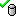

Checking in and checking out resources
When you open an object for the first time you will see a red banner at the top that reads "Read Only Copy - Changes can not be saved." If you wish to edit it you'll need to make a local editable copy of the object from the library, which you can do by right clicking on the object in the palette window and selecting "Check out". Objects that are checked out are indicated by a green checkmark in the palette window and a green banner at the top of the main editing window that reads "Writable copy - changes can be saved." You can now edit this copy freely. However, the edits you make won't be saved back into the database right away. This allows you to freely make and test out changes without worrying about making a mistake that damages things you've already accomplished.
You can also create a "local copy" of a resource, separating it entirely from the database. Local copies can not be checked into the game.
Checking out a resource
Checking in a resource
{kind=link}
{kind=link}
You can view a summary of the changes you've made to a checked out object by comparing it with the version in the database with the "Diff to Last Checked In" command, available by right-clicking the object in the palette window. The editing window will show the source text of the two version side by side, with added lines highlighted in green, changed lines highlighted in gray, and deleted lines highlighted in red. If you're satisfied with your changes you can apply them to the copy storied in the database by right-clicking on the object in the palette window and selecting "check in", or if you'd prefer to go back to the old version that's stored in the database select "undo check out".
Status icons

- Resource is checked out to you.- - Resource is checked out to someone else.
If you are the only user working with a database, the "checked out to someone else" icon could indicate an error. Ensure that you are logged in under the same user account as you were when you checked out the resource.
See also
| Language: | English • русский |
|---|